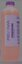
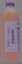
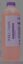

Selecciona un químico🧪

Hydrasil Arterial 26
Hydrasill Arterial 31
Jaundice Hydrasil ArterialCalculo en tiempo real.
Base del cálculo: Si escribes volumen final, se usa ese total exacto. Si lo dejas vacío,
se estima por peso. Dilución C1·V1 = C2·V2.